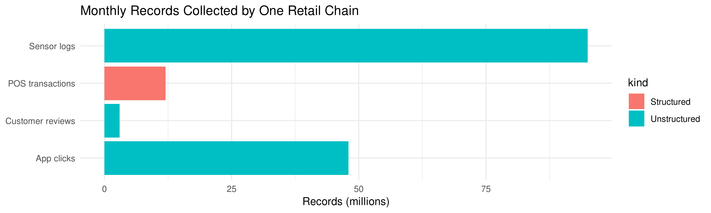

[1] 4 8 7 2 9 1 0 0 0 0 4 7 1 2 3 4 7 8 6 8 1 5 4 8 1 6 6 0 4 0 5 3 5 5 1 1 2 7
[39] 3 7 6 0 9 3 0 4 9 2 0 9 [1] 15 21 12 48 31 28 43 9 22 27Chapter 14: Sampling and Simulation
Shih Chien University
2026-10-08
Chapter 14 covers how researchers sample, how surveys bias results, simulation with random numbers, and big data.
| Section | Topics |
|---|---|
| 14-1 | Why sample; unbiased vs. biased samples; four kinds of bias; the four basic sampling methods and others |
| 14-2 | Survey types; five faulty-question mistakes; other sources of response bias; open- vs. closed-ended items |
| 14-3 | Simulation; the Monte Carlo method in five steps; random numbers |
| 14-4 | Big data; the 3 V’s and variability; structured vs. unstructured data |
After completing this chapter, you should be able to
Pollsters such as Gallup and Nielsen, and the U.S. Census Bureau, gather information by selecting samples from well-defined populations. As in Chapter 1, the subjects in the sample are a subgroup of the subjects in the population, and the sampling methods used to choose them rely on random numbers.
In Chapter 1 a population was defined as all subjects (human or otherwise) under study. Since some populations are very large, researchers cannot use every single subject, so a sample must be selected. Technically any subgroup of the population can be called a sample, but for researchers to make valid inferences about population characteristics, the sample must be random.
Random Sample
For a sample to be a random sample, every member of the population must have an equal chance of being selected.
Unbiased Sample and Biased Sample
When a sample is chosen at random from a population, it is said to be an unbiased sample — the sample is, for the most part, representative of the population.
If a sample is selected incorrectly, it may be a biased sample. Samples are biased when some type of systematic error has been made in the selection of the subjects.
Ways a Sample Can Become Biased
| Type of bias | When it occurs |
|---|---|
| Sampling or selection bias | Some subjects are more likely to be included in the survey or study than others |
| Nonresponse bias | Subjects who do not respond to a survey question would answer it differently than those who do respond |
| Response or interviewer bias | The subject gives a different response than the respondent truly believes |
| Volunteer bias | Volunteers are used, and they may be more interested in the survey or study and so answer or participate differently than randomly selected subjects |
Three Reasons for Sampling
This does not mean that the smaller the sample, the better — the opposite is true. In general, larger samples, if correct sampling techniques are used, give more reliable information about the population.
It would be ideal if the sample were a perfect miniature of the population in all characteristics. This ideal is impossible to achieve, because there are so many human traits (height, weight, IQ, and so on). The best that can be done is to select a sample that is representative with respect to some characteristics, preferably those pertaining to the study.
For example, if one-half of the population subjects are female, then approximately one-half of the sample subjects should be female. Likewise, other characteristics such as age, socioeconomic status and IQ should be represented proportionately.
To obtain unbiased samples, statisticians have developed several basic sampling methods. The most common are random, systematic, stratified and cluster sampling.
A random sample is obtained by using methods such as random numbers, which can be generated from calculators, computers or tables. In random sampling the basic requirement is that, for a sample of size n, all possible samples of this size have an equal chance of being selected from the population.
Caution
Three commonly used methods are not random sampling, because not all possible samples of a specific size have an equal chance of being selected:
How to Select a Random Sample
Method 1. Number each element of the population, place the numbers on cards, put the cards in a hat or fishbowl, mix them, and select the sample by drawing the cards. The numbers must be well mixed; on occasion the numbers chosen turn out to be those that were placed in the bowl last.
Method 2 (preferred). Use a table of random numbers, such as Table A-1 in Appendix A, or numbers generated by a computer.
Random samples can be selected with or without replacement. If the same member of the population cannot be used more than once in the study, the sample is selected without replacement — once a random number is selected, it cannot be used again.
60035 97320 62543 61404 94367 07080 66112 56180 15813 15978
64072 76075 91393 88948 99244 60809 10784 36380 05721 24481
14914 85608 96871 74743 73692 53664 67727 21440 13326 98590
93723 60571 17559 96844 88678 89256 75120 62384 77414 24023
86656 43736 62752 53819 81674 43490 07850 61439 52300 55063
31286 27544 44129 51107 53727 65479 09688 57355 20426 44527
95519 78485 20269 64027 53229 59060 99269 12140 97864 31064
78019 75498 79017 22157 22893 88109 57998 02582 34259 11405
45487 22433 62809 98924 96769 24955 60283 16837 02070 22051
64769 25684 33490 25168 34405 58272 90124 92954 43663 39556The theory behind random numbers is that each digit, 0 through 9, has an equal probability of occurring: in every sequence of 10 digits, each digit has a probability of \dfrac{1}{10} of occurring. This does not mean that every sequence of 10 digits contains each digit. It means that on average each digit will occur once — the digit 2 may occur 3 times in one sequence of 10 digits and not at all in later ones, averaging to a probability of \dfrac{1}{10}.
[1] 4 8 7 2 9 1 0 0 0 0 4 7 1 2 3 4 7 8 6 8 1 5 4 8 1 6 6 0 4 0 5 3 5 5 1 1 2 7
[39] 3 7 6 0 9 3 0 4 9 2 0 9 [1] 15 21 12 48 31 28 43 9 22 27Each digit 0 through 9 is equally likely, so the first call reproduces the behaviour of the random-number table. The second call draws ten numbers between 1 and 50 without replacement, which is what sample() does by default.
Auditing Convenience-Store Branches
A convenience-store chain operates 50 branches in northern Taiwan and wants to send mystery shoppers to some of them. The audit budget covers only 10 branches, and head office wants them chosen at random so that no district manager can predict who will be visited. Select a random sample of 10 branches from the 50. (hypothetical data)
Note: This answer is not unique.
Back to Example 14-2
Solution
Step 1. Number each branch from 1 to 50. Here the branches are numbered alphabetically by the district they serve.
01. Bade 14. Luzhou 27. Shilin 40. Wulai
02. Bali 15. Luzhu 28. Shimen 41. Xindian
03. Banqiao 16. Nangang 29. Shuangxi 42. Xinyi
04. Beitou 17. Neihu 30. Shulin 43. Xinzhuang
05. Daan 18. Pinglin 31. Songshan 44. Xizhi
06. Datong 19. Pingxi 32. Taishan 45. Yangmei
07. Daxi 20. Pingzhen 33. Tamsui 46. Yingge
08. Gongliao 21. Ruifang 34. Taoyuan 47. Yonghe
09. Guishan 22. Sanchong 35. Tucheng 48. Zhonghe
10. Jinshan 23. Sanxia 36. Wanhua 49. Zhongli
11. Keelung 24. Sanzhi 37. Wanli 50. Zhongshan
12. Linkou 25. Shenkeng 38. Wenshan
13. Longtan 26. Shiding 39. WuguSolution
Step 2. Using the table of random numbers, find a starting point. Close your eyes and place your finger anywhere on the table. Here the finger lands on 62543, the first number in the third column. Use the last two digits, 4 and 3, so the first random number is 43.
Continue down the column. The next number is 91393, but 93 is beyond 1 through 50, so skip it. Keep going until the column ends, then start at the top of the next column. If the same number appears twice, skip it: 74743 gives 43 again, which is already in the sample.
The ten random numbers are 43,\ 29,\ 17,\ 09,\ 04,\ 48,\ 44,\ 19,\ 07,\ 27
Solution
Step 3. These correspond to the following branches, which the mystery shoppers will visit:
| Number | Branch | Number | Branch |
|---|---|---|---|
| 43 | Xinzhuang | 48 | Zhonghe |
| 29 | Shuangxi | 44 | Xizhi |
| 17 | Neihu | 19 | Pingxi |
| 09 | Guishan | 07 | Daxi |
| 04 | Beitou | 27 | Shilin |
Solution
Same selection in R
branches <- c(
"Bade","Bali","Banqiao","Beitou","Daan","Datong","Daxi","Gongliao","Guishan","Jinshan",
"Keelung","Linkou","Longtan","Luzhou","Luzhu","Nangang","Neihu","Pinglin","Pingxi","Pingzhen",
"Ruifang","Sanchong","Sanxia","Sanzhi","Shenkeng","Shiding","Shilin","Shimen","Shuangxi","Shulin",
"Songshan","Taishan","Tamsui","Taoyuan","Tucheng","Wanhua","Wanli","Wenshan","Wugu","Wulai",
"Xindian","Xinyi","Xinzhuang","Xizhi","Yangmei","Yingge","Yonghe","Zhonghe","Zhongli","Zhongshan")
branches[c(43, 29, 17, 9, 4, 48, 44, 19, 7, 27)] [1] "Xinzhuang" "Shuangxi" "Neihu" "Guishan" "Beitou" "Zhonghe"
[7] "Xizhi" "Pingxi" "Daxi" "Shilin" Solution
A fresh random sample
[1] 9 10 11 20 24 33 36 40 43 48 [1] "Guishan" "Jinshan" "Keelung" "Pingzhen" "Sanzhi" "Tamsui"
[7] "Wanhua" "Wulai" "Xinzhuang" "Zhonghe" sample() draws without replacement; both samples are correct.
Caution
Random sampling has one limitation. If the population is extremely large, it is time-consuming to number and select the sample elements.
Systematic Sample
A systematic sample is a sample obtained by numbering each element in the population, selecting some random starting point, and then selecting every kth element (third or fifth or tenth, and so on) from the population to be included in the sample.
A Systematic Audit Schedule
Using the population of 50 branches in Example 14-1, select a systematic sample of 10 branches.
Solution
Step 1. Number the population units as shown in Example 14-1.
Step 2. Since there are 50 branches and 10 are to be selected, the rule is to select every fifth branch. This rule was determined by dividing 50 by 10, which yields 5.
Step 3. Using the table of random numbers, select the first number (from 1 to 5) at random. In this case 2 was selected.
Step 4. Select every fifth number starting with 2.
2,\ 7,\ 12,\ 17,\ 22,\ 27,\ 32,\ 37,\ 42,\ 47
Solution
The branches selected are:
| Number | Branch | Number | Branch |
|---|---|---|---|
| 2 | Bali | 27 | Shilin |
| 7 | Daxi | 32 | Taishan |
| 12 | Linkou | 37 | Wanli |
| 17 | Neihu | 42 | Xinyi |
| 22 | Sanchong | 47 | Yonghe |
The advantage of systematic sampling is the ease of selecting the sample elements. In many cases a numbered list of the population units already exists, such as a factory manager’s list of employees or an in-house telephone directory.
Caution
You must be careful how the items are arranged on the list.
Stratified Sample
A stratified sample is a sample obtained by dividing the population into subgroups, called strata, according to various homogeneous (similar) characteristics and then randomly selecting members from each stratum for the sample.
For example, a population may consist of males and females who are smokers or nonsmokers. The researcher divides the population into four subgroups — male smokers, male nonsmokers, female smokers, female nonsmokers — and then selects a random sample from each subgroup. This ensures the sample is representative on the basis of gender and smoking, although it may not be representative on the basis of other characteristics.
Selecting Member Companies
An exporters’ association has the 20 member companies listed below, each classified by industry (electronics or food) and by firm size (small or large). Select a sample of eight companies on the basis of industry and size by stratification. (hypothetical data)
1. Aurora Tech E S 11. Helios Optics E L
2. Harvest Sauce F L 12. Ruby Fruit F L
3. Camellia Tea F S 13. Orchid Circuits E S
4. Beacon Semi E L 14. Pomelo Foods F S
5. Jade Snack F S 15. Granite Boards E L
6. Kingfisher Micro E S 16. Silver Carp Foods F L
7. Skyline Vision E L 17. Zenith Modules E S
8. Golden Grain F L 18. Willow Bakery F S
9. Lotus Noodle F S 19. Summit Cable E L
10. Nimbus Devices E S 20. Teal Bean Foods F LE = electronics, F = food; S = small, L = large.
Solution
Step 1. Divide the population into two subgroups, electronics firms and food firms.
Step 2. Divide each subgroup further into small firms and large firms.
Group 1 (E, S) Group 2 (E, L)
1. Aurora Tech 1. Beacon Semi
2. Kingfisher Micro 2. Skyline Vision
3. Nimbus Devices 3. Helios Optics
4. Orchid Circuits 4. Granite Boards
5. Zenith Modules 5. Summit Cable
Group 3 (F, S) Group 4 (F, L)
1. Camellia Tea 1. Harvest Sauce
2. Jade Snack 2. Golden Grain
3. Lotus Noodle 3. Ruby Fruit
4. Pomelo Foods 4. Silver Carp Foods
5. Willow Bakery 5. Teal Bean FoodsSolution
Step 3. Determine how many companies to select from each subgroup for proportional representation. There are four groups, and a total of eight companies is needed, so two companies must be selected from each subgroup.
Step 4. Select two companies from each group by using random numbers. In this case the random numbers are
| Group 1 | Group 2 | Group 3 | Group 4 |
|---|---|---|---|
| Companies 4 and 3 | Companies 4 and 2 | Companies 5 and 3 | Companies 2 and 3 |
The stratified sample then consists of the following companies:
| Orchid Circuits | Granite Boards |
| Nimbus Devices | Skyline Vision |
| Willow Bakery | Golden Grain |
| Lotus Noodle | Ruby Fruit |
Solution
Prepare data
members <- data.frame(
company = c("Aurora Tech","Harvest Sauce","Camellia Tea","Beacon Semi","Jade Snack",
"Kingfisher Micro","Skyline Vision","Golden Grain","Lotus Noodle","Nimbus Devices",
"Helios Optics","Ruby Fruit","Orchid Circuits","Pomelo Foods","Granite Boards",
"Silver Carp Foods","Zenith Modules","Willow Bakery","Summit Cable","Teal Bean Foods"),
industry = c("Electronics","Food","Food","Electronics","Food",
"Electronics","Electronics","Food","Food","Electronics",
"Electronics","Food","Electronics","Food","Electronics",
"Food","Electronics","Food","Electronics","Food"),
size = c("Small","Large","Small","Large","Small",
"Small","Large","Large","Small","Small",
"Large","Large","Small","Small","Large",
"Large","Small","Small","Large","Large")
)
table(members$industry, members$size)
Large Small
Electronics 5 5
Food 5 5Solution
Draw two companies from each stratum
# A tibble: 8 × 3
# Groups: industry, size [4]
company industry size
<chr> <chr> <chr>
1 Granite Boards Electronics Large
2 Skyline Vision Electronics Large
3 Orchid Circuits Electronics Small
4 Nimbus Devices Electronics Small
5 Golden Grain Food Large
6 Ruby Fruit Food Large
7 Willow Bakery Food Small
8 Lotus Noodle Food SmallEach of the four strata contributes exactly two companies, so both industries and both size classes are represented.
Stratified Sampling
Major advantage. It ensures representation of all population subgroups that are important to the study.
Two major drawbacks.
Cluster Sample
A cluster sample is a sample obtained by selecting a preexisting or natural group, called a cluster, and using the members in the cluster for the sample.
Many studies in education use already existing classes, such as the seventh grade in Wilson Junior High School. The voters of an electoral district might be surveyed about a mayoral candidate, or the residents of an entire city block polled about household incomes. Researchers may use all units of a cluster if that is feasible, or select only part of a cluster by random methods.
Cluster Sampling
Three advantages. A cluster sample (1) can reduce costs, (2) can simplify fieldwork, and (3) is convenient. In a dental study X-raying fourth-grade students’ teeth, it is simple to select a single classroom and bring the X-ray equipment to the school; other methods might require transporting the machine to several schools or the pupils to the dental office.
Major disadvantage. The elements in a cluster may not have the same variations in characteristics as elements selected individually from a population, because people in specific clusters such as neighborhoods or clubs tend to be more homogeneous — similar incomes, similar cars, similar houses and, for the most part, similar habits.
Four Additional Methods
Sequence sampling, used in quality control, samples successive units taken from production lines to ensure that the products meet certain standards set by the manufacturing company.
Double sampling gives a very large population a questionnaire to determine those who meet the qualifications for a study. After the questionnaires are reviewed, a second, smaller population is defined, and a sample is selected from this group.
Multistage sampling uses a combination of sampling methods.
Convenience sampling selects subjects from the population who are available to use. These samples are usually not representative of the population, and their use can lead to biased conclusions.
Suppose a research organization wants to conduct a nationwide survey for a new product being manufactured. A sample can be obtained by using the following combination of methods.
This hypothetical example illustrates a typical multistage sampling method.
Nine Steps
| Step | Action |
|---|---|
| 1 | Decide what information is needed. |
| 2 | Determine how the data will be collected (phone interview, mail survey, and so on). |
| 3 | Select the information-gathering instrument or design the questionnaire if one is not available. |
| 4 | Set up a sampling list, if possible. |
| 5 | Select the best method for obtaining the sample (random, systematic, stratified, cluster or other). |
| 6 | Conduct the survey and collect the data. |
| 7 | Tabulate the data. |
| 8 | Conduct the statistical analysis. |
| 9 | Report the results. |
The answer is based on several things. Two important considerations are time and money: the more of both a researcher has, the larger the sample can be. When random samples are used, larger samples can result in more reliable conclusions.
Also, as shown in Chapter 7, an actual sample size can be computed if the researcher knows the confidence level and the degree of accuracy (the margin of error) desired.
A survey is conducted when a sample of individuals is asked to respond to questions about a particular subject.
Two Types of Surveys
Interviewer-administered surveys require a person to ask the questions. The interview can be conducted face to face in an office, on a street, or in the mall, or via telephone.
Self-administered surveys can be done by mail, email, the Internet, or in a group setting such as a classroom.
When analyzing the results of surveys you should be very careful about the interpretations, because the way a question is phrased can influence the way people respond.
| Question asked | In favor | Against |
|---|---|---|
| Do you favor a small charge on single-use shopping bags, to cut plastic waste in the city? | 78% | 18% |
| Should shoppers be made to pay a new fee on every bag issued at a convenience store? | 34% | 59% |
Both questions ask about the same policy, yet the responses are almost reversed: the first names the purpose of the charge, the second names only its cost. Different phrasings of one question produce different answers. (hypothetical data)
Avoid These Mistakes
Caution
Two Types of Questions
An open-ended question is one such as “List three activities that you plan to spend more time on when you retire.”
A closed-ended question is one such as “Which one of these activities do you plan to spend more time on after you retire: traveling; eating out; fishing and hunting; exercising; visiting relatives?”
The trade-off. With a closed-ended question, respondents are forced to choose the answers the researcher gives and cannot supply their own. With an open-ended question, the results may be so varied that summarizing them is difficult, if not impossible.
Good Practice
Questionnaires help researchers gather needed statistical information, but much care must be given to proper design and usage; otherwise the results will be unreliable.
Many real-life problems can be solved by employing simulation techniques.
Simulation Technique
A simulation technique uses a probability experiment to mimic a real-life situation.
Instead of studying the actual situation, which might be too costly, too dangerous or too time-consuming, scientists and researchers create a similar situation but one that is less expensive, less dangerous or less time-consuming. NASA uses space shuttle flight simulators so astronauts can practice flying the shuttle, and most video games use the computer to simulate real-life sports.
Simulation techniques go back to ancient times when the game of chess was invented to simulate warfare. Modern techniques date to the mid-1940s, when two physicists, John Von Neumann and Stanislaw Ulam, developed simulation techniques to study the behavior of neutrons in the design of atomic reactors.
Mathematical simulation techniques use probability and random numbers to create conditions similar to those of real-life problems. Computers have played an important role in simulation, since they can generate random numbers, perform experiments, tally the outcomes and compute the probabilities much faster than human beings.
Monte Carlo Method
The Monte Carlo method is a simulation technique using random numbers. Monte Carlo simulation techniques are used in business and industry to solve problems that are extremely difficult or involve a large number of variables.
Five Steps
| Step | Action |
|---|---|
| 1 | List all possible outcomes of the experiment. |
| 2 | Determine the probability of each outcome. |
| 3 | Set up a correspondence between the outcomes of the experiment and the random numbers. |
| 4 | Select random numbers from a table and conduct the experiment. |
| 5 | Compute any statistics and state the conclusions. |
Matching Outcomes to Random Digits
| Experiment | Correspondence |
|---|---|
| Tossing a coin | Two outcomes, each with probability \frac{1}{2}: odd digits 1, 3, 5, 7, 9 represent a head; even digits 0, 2, 4, 6, 8 represent a tail |
| Rolling one die | Digits 1, 2, 3, 4, 5, 6 represent the spots; the digits 7, 8, 9 and 0 are ignored, since they cannot be rolled |
| Rolling two dice | Two random digits are needed: 26 means a 2 on the first die and a 6 on the second; in 37 the 7 cannot be used, so another digit must be selected |
| A three-digit daily lotto number | Use three-digit random numbers |
| A spinner with four numbers (Figure 14-3) | Each number has probability \frac{1}{4}: 1 and 2 represent 1, 3 and 4 represent 2, 5 and 6 represent 3, 7 and 8 represent 4; the digits 9 and 0 are ignored |
The random number 8631 represents four tosses of a single coin with the results T, T, H, H — or one toss of four coins with the same results.
[1] "T" "T" "H" "H" [1] 6 4 1 4 6 1 1 2 3 4 [1] 2 4 3 4 4 2 4 2 2 1The first line applies the coin correspondence to the digits 8631 of the table above. The last two lines skip the correspondence altogether: drawing from 1:6 and from 1:4 already discards the digits a die or a four-number spinner cannot produce.
Late Deliveries on a Food Platform
On a food-delivery platform, 40% of the orders placed in one district arrive after the promised time window (hypothetical data). Using random numbers, simulate a sample of 20 orders and count how many of them arrive late.
Solution
Now 40% is \dfrac{40}{100} = \dfrac{4}{10}, so out of every 10 orders, 4 arrive after the promised window.
Using the table of random numbers, assign the digits 1, 2, 3 and 4 to the orders that arrive late, and the digits 5 through 9 and 0 to the orders that arrive on time.
Then read 20 random digits and count how many fall in the set \{1, 2, 3, 4\}.
Solution
Simulate the 20 orders in R
[1] 8 8 6 0 9 5 2 2 8 2 2 1 3 4 0 0 5 7 9 4[1] 8[1] 0.4Eight of the 20 simulated orders are late, a proportion of 0.4 that happens to land exactly on the theoretical 0.40. The correspondence, not the particular digits, is the answer; another block of digits gives a different count scattered around 40%.
Winning a Freight Tender
Two freight forwarders, Northline and Southport, bid against each other for export shipments, and Northline wins twice as often as Southport. Using random numbers, simulate the outcomes of a series of five tenders. (hypothetical data)
Solution
Since Northline wins twice as often as Southport, the probability that Northline wins a tender is \dfrac{2}{3} and the probability that Southport wins is \dfrac{1}{3}.
Use random digits 1 through 6 to represent a win for Northline and 7, 8 and 9 to represent a win for Southport. Disregard 0.
Five random digits then make up one five-tender series.
Solution
Same correspondence in R
[1] 9 4 1 1 3winner
Northline Southport
4 1 Drawing from 1:9 rather than 0:9 is how the instruction “disregard 0” is carried out. The digits drawn are 9, 4, 1, 1 and 3, so Northline wins four of the five tenders and Southport wins one.
Inspecting Export Containers
At a container terminal, one container in six has an error in its shipping documents (hypothetical data). An inspector opens containers one at a time until the first documentation error appears. Using simulation, find the average number of containers opened. Try the experiment 20 times.
Solution
Step 1. List all possible outcomes for one container. Number the six equally likely inspection results 1, 2, 3, 4, 5, 6, and let 6 stand for a documentation error.
Step 2. Determine the probabilities. Each outcome has a probability of \dfrac{1}{6}.
Step 3. Set up a correspondence between the random numbers and the outcomes. Use random numbers 1 through 6; omit the numbers 7, 8, 9 and 0.
Step 4. Select a block of random numbers and count each digit 1 through 6 until the first 6 is obtained. For example, the block 40719236 means that 5 containers were opened, since 0, 7 and 9 are omitted and the inspections are 4, 1, 2, 3, 6.
Solution
Step 4 (continued). The 20 trials produced by the simulation below are:
Trial Containers opened Trial Containers opened
1 1 11 5
2 7 12 11
3 4 13 8
4 9 14 8
5 2 15 1
6 2 16 6
7 1 17 5
8 2 18 12
9 11 19 8
10 9 20 2
Total 114Solution
Step 5. Compute the results and draw a conclusion. Here you must find the average:
\bar{X} = \frac{\Sigma X}{n} = \frac{114}{20} = 5.7
Hence, the average is about 6 containers.
Note: the waiting time to the first success has expected value \dfrac{1}{p} = \dfrac{1}{1/6} = 6, so the theoretical average is 6. If this experiment is done many times, say 1000 times, the results should be closer to the theoretical result.
Solution
Same experiment in R
[1] 1 7 4 9 2 2 1 2 11 9 5 11 8 8 1 6 5 12 8 2[1] 114[1] 5.7rgeom() counts the failures before the first success, so adding 1 gives the number of containers actually opened. No loop is needed.
Solution
Output figure — the vertical line marks the theoretical average of 6
Finding the Right Pallet
A picker at a distribution centre is told that a customer’s order is on one of four identical pallets. She checks the pallets one at a time, in random order, until she finds the order. Find the average number of pallets checked. Try the experiment 25 times. (hypothetical data)
Solution
Step 1. List all possible outcomes of the experiment. They are pallet 1, pallet 2, pallet 3 and pallet 4.
Step 2. Determine the probability of each outcome. Since a pallet is checked at random and there are four pallets, the probability of checking each one first is \dfrac{1}{4}.
Step 3. Set up a correspondence between the random numbers and the outcomes. Number the pallets 1 through 4 and assume that the order is on pallet 2. The picker does not know this, so she checks the pallets in random order. For the simulation, read a sequence of random digits using only 1 through 4, skipping any repeat, until the digit 2 is reached.
Solution
Step 4. Repeat the experiment 24 more times. The 25 trials produced by the simulation below are:
Trial Pallets checked Trial Pallets checked
1 2 14 4
2 2 15 3
3 3 16 3
4 4 17 3
5 2 18 3
6 1 19 4
7 3 20 4
8 1 21 3
9 2 22 2
10 3 23 3
11 4 24 2
12 2 25 3
13 1 Total 67Solution
Step 5. Compute any statistics and state the conclusions. Find the average:
\bar{X} = \frac{\Sigma X}{n} = \frac{2 + 2 + \cdots + 3}{25} = \frac{67}{25} = 2.68
The theoretical average is 2.5, since the order is equally likely to be found on the first, second, third or fourth pallet checked. Again, only 25 repetitions were used; more repetitions should give a result closer to the theoretical average.
Solution
Same experiment in R
[1] 2 2 3 4 2 1 3 1 2 3 4 2 1 4 3 3 3 3 4 4 3 2 3 2 3[1] 67[1] 2.68[1] 2.5sample(4) shuffles the four pallets into a checking order, and which() reports the position at which the order turns up. The last line is the theoretical average.
A Scratch-Card Promotion
A convenience-store chain runs a scratch-card promotion. Of every 10 cards, five are worth NT$50, three are worth NT$100 and two are worth NT$300 (hypothetical data). A customer scratches one card at random. What is the expected value of a card? Perform the experiment 25 times.
Solution
Step 1. List all possible outcomes. They are NT$50, NT$100 and NT$300.
Step 2. Assign the probabilities to each outcome:
P(50) = \frac{5}{10} \qquad P(100) = \frac{3}{10} \qquad P(300) = \frac{2}{10}
Step 3. Set up a correspondence between the random numbers and the outcomes. Use random numbers 1 through 5 to represent an NT$50 card, 6 through 8 to represent an NT$100 card, and 9 and 0 to represent an NT$300 card.
Solution
Step 4. Select 25 random numbers and tally the results.
Number Results (NT$)
96569 300, 100, 50, 100, 300
56685 50, 100, 100, 100, 50
53749 50, 50, 100, 50, 300
52625 50, 50, 100, 50, 50
43420 50, 50, 50, 50, 300Step 5. Compute the average:
\bar{X} = \frac{\Sigma X}{n} = \frac{300 + 100 + 50 + \cdots + 300}{25} = \frac{2600}{25} = 104
Hence, the simulated average value of a card is NT$104.
Solution
Recall that using the expected value formula E(X) = \Sigma[X \cdot P(X)] gives a theoretical average of
E(X) = (0.5)(50) + (0.3)(100) + (0.2)(300) = 115
Reproduce the 25 draws in R
[1] 300 100 50 100 300 50 100 100 100 50 50 50 100 50 300 50 50 100 50
[20] 50 50 50 50 50 300[1] 2600[1] 104ifelse() applies the correspondence of Step 3: digits 1 to 5 give NT$50, 6 to 8 give NT$100, and 9 and 0 give NT$300.
Caution
Remember that simulation techniques do not give exact results. The more times the experiment is performed, the closer the actual results should be to the theoretical results. (Recall the law of large numbers.)
| Example | Simulated result | Theoretical result |
|---|---|---|
| 14-6 Inspecting containers | 5.7 containers | 6 containers |
| 14-7 Finding a pallet | 2.68 pallets | 2.5 pallets |
| 14-8 Scratch card | NT$104 | NT$115 |
On a game show the host gives a contestant a choice of three doors. A prize is behind one door. After the contestant selects a door, the host opens one of the other doors with no prize behind it and asks whether the contestant wants to switch. By switching, the probability of winning is \dfrac{2}{3} and the probability of losing is \dfrac{1}{3}.
[1] 0.6672Switching wins exactly when the first pick was wrong, so the door the host opens never has to be simulated. The simulated win rate is 0.6672, against the theoretical \dfrac{2}{3} \approx 0.667.
With the advent of computers and their expanding capacity, companies can secure large amounts of data every day. Hence a relatively new field of applications of data, called big data, is emerging.
Big Data
Any kind of data which has these three characteristics is defined as big data:
Volume, Velocity, Variety and Variability
| V | Meaning |
|---|---|
| Volume | The data set is extremely large |
| Velocity | The size of the data set is increasing very rapidly |
| Variety | The data set contains an extremely wide variety of data |
| Variability | The data can be collected at various times, such as monthly, seasonally, or per event |
The first three characteristics are known as the 3 V’s of big data, first developed by industrial analyst Doug Laney.
Two Kinds of Data
Structured data are data that can be displayed in the form of tables using rows and columns. Numbers, names, dates, genders, income and groups of words are examples.
Unstructured data are data in which words and images are used. Text messages, comments about a business, emails, photographs, and data that include various profiles of situations where words and images are used are some examples.
Most of what an organization collects today is unstructured: for every transaction record that fits neatly into rows and columns there are many more reviews, emails, photographs, voice recordings and sensor logs that do not.
order_id date amount store
1 1 2026-03-05 245 Taipei
2 2 2026-03-06 138 Kaohsiung
3 3 2026-03-06 1020 Taipei[1] 45 30The orders sort, average and join at once; the reviews do not.
Output figure — one retail chain’s monthly data volume (hypothetical data)
monthly_records <- data.frame(
source = c("POS transactions", "App clicks", "Customer reviews", "Sensor logs"),
kind = c("Structured", "Unstructured", "Unstructured", "Unstructured"),
millions = c(12, 48, 3, 95)
)
ggplot(monthly_records, aes(millions, source, fill = kind)) +
geom_col() +
labs(title = "Monthly Records Collected by One Retail Chain",
x = "Records (millions)", y = NULL)
Big data sets are obtained from a variety of sources.
What Must Be Considered
Data can be collected on a day-to-day basis. In manufacturing processes, the information about the use of a credit card is recorded. In health care, records of illnesses, treatments and successes of patient treatments are recorded.
Machine-Generated and Human-Generated Data
Data can be machine-generated, computer-generated or human-generated; sometimes data are obtained by a combination of human- and machine-generated processes.
The second aspect of big data is how and where it is stored. It is necessary to structure the data so that they can be retrieved to be analyzed. This is a complicated process, since a large variety of data is collected.
For example, a single credit card transaction could include the customer’s name, address, phone number, type of card used, credit card number, the items purchased, the amount of the purchase, and the time and date of purchase.
Big data sets are analyzed to give information that helps business owners make better decisions and run their businesses more efficiently.
An Illustration: Routing a Delivery Fleet
Consider a parcel carrier whose vans carry sensors that record every stop, every idling minute and every door opening. One van’s log for one day is of little interest on its own. Pooled over thousands of vans and millions of stops, the same records show which turns, which delivery windows and which street sequences cost the most time and fuel.
The output of the analysis is a route plan: the order in which each driver should make the day’s stops. Shorter routes mean less fuel, fewer driving hours and less wear on the vehicles — a saving that is invisible in any single day’s data but substantial across a fleet over a year.
Applications
| Field | Use of big data analysis |
|---|---|
| Banking | Boost customer satisfaction with the banks’ services, minimize fraud, keep up with the services of other banks |
| Education | Identify potential dropouts before they leave and provide services to keep them in school; track student progress against other schools; find better methods of student evaluation |
| Government | Manage utilities and agencies, reduce traffic congestion, reduce crime |
| Health care | Improve patient care by keeping records of illnesses, prescriptions, treatments and recoveries; give doctors quick, accurate access to patient health records |
| Manufacturing | Boost output, minimize waste, make sound decisions about products and services |
| Retail sales | Find the most effective way to handle customer complaints and bring back customers who no longer use the business |
Many of the statistical techniques in this book, along with other techniques such as optimization, affinity analysis and forecasting, can be used with big data to make our lives easier and more exciting.
Chapter 14 Vocabulary
biased sample · big data · cluster sample · convenience sample · double sampling · Monte Carlo method · multistage sampling · random sample · sequence sampling · simulation technique · stratified sample · structured data · systematic sample · unbiased sample · unstructured data
Key point
Key point
Copyright notice. These teaching materials follow the organization and terminology of Bluman, A. G. (2023). Elementary statistics: A step by step approach (11th ed.). McGraw Hill. All rights in the original work are reserved by its authors and publishers.
Original examples. Every worked example, data set, and R script in these slides was written for this course. The data are hypothetical unless stated otherwise.
Non-commercial use only. These materials are strictly intended for educational purposes and must not be used for commercial gain or profit.
Proper attribution. Any reproduction, distribution, or use of these materials must provide proper attribution to the original source.

Elementary Statistics: A Step by Step Approach